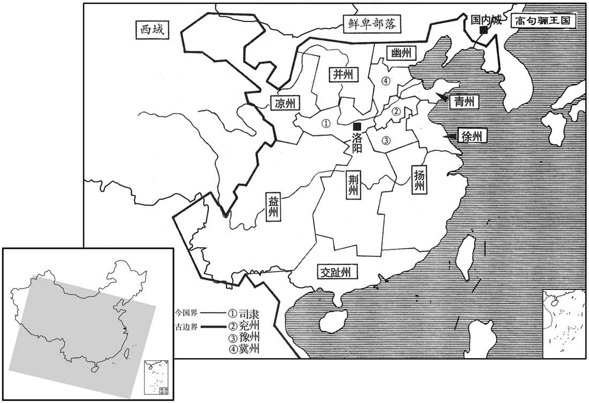

公元188年资治通鉴：本年记事、原文与白话对照
按原书编年位置阅读；追叙和史论不等于本年发生的事件。白话采用所据译本，缺译不以生成译文补齐。
卷59 · 本年记事
公元188年 · 汉孝灵皇帝中平五年
中平五年〔（戊辰、一八八）〕
上传原文的注释括号有异常，字符原样保留；无法可靠划分的段落默认全文显示。
本年事件索引（现代整理）

本年形势与背景参考图
春，正月，丁酉，赦天下。
春季，正月，丁酉（十五日），大赦天下。
二月，有星孛于紫宫。〔紫宫，即太微也。匡卫十二星之内，皆曰紫宫，天子之宫也。孛，蒲内翻。
本段缺少可靠对应白话，原文完整保留；未使用生成译文。
黄巾余贼郭大等起于河西白波谷，〔帝纪作「西河」，当从之。又按宋白续通典，河南府河清县，今理白波镇，无以此谷于孟津为河西欤！〕寇太原、河东。
黄巾军残部郭大等人在河西白波谷起兵，进攻太原郡、河东郡。
三月，屠各胡攻杀并州刺史张懿。〔屠，直于翻。〕
三月，匈奴屠各部落进攻并州，杀并州刺史张懿。
太常江夏刘焉见王室多故，建议以为：「四方兵寇，由刺史威轻，既不能禁，且用非其人，以致离叛。宜改置牧伯，选清名重臣以居其任。」焉内欲求交趾牧。〔以交趾僻远，可以避祸也。侍中广汉董扶〔扶学图谶，何进荐之，征拜侍中。〕私谓焉曰：「京师将乱，益州分野有天子气。」〔蔡邕月令章包：自危十度至壁八度，谓之豕韦之次，卫之分野。自壁八度至胃一度，谓之降娄之之，鲁之分野。自胃一度至毕六度，谓之大梁之次，赵之分野。自毕六度至井十度，谓之实沈之次，晋之分野。自井十度至柳三度，谓之鹑首之次，秦之分野。自柳三度至张十二度，谓之鹑火之次，周之分野。自张十二度至轸六度，谓之鹑尾之次，楚之分野。自轸六度至亢八度，谓之寿星之次，郑之分野。自亢八度至尾四度，谓之大火之次，宋之分野。自尾四度至斗六度，谓之析木之次，燕之分野。自斗六度至须女二度，谓之星纪之次，越之分野。自须女二度至危十度，谓之玄枵之次，齐之分野。晋书天文志用后魏太史令陈卓所言邵国所入宿度，今亦载之：自轸十二度至氐四度为寿星，于辰，郑分，属兖州。自氐五度至尾九度为大火，于辰在卯，宋分，属豫州。自尾十度至南斗十一度为析木，于辰在寅，燕分，属幽州。自南斗十二度至须女七度为星纪，于辰在丑，吴、越分，属杨州。自须女八度至危十五度为玄枵，于辰在子，齐分，属青州。自危十六度为大梁，于辰在酉，赵分，属冀州。自毕十二度至东井十五度为实沈，于辰在申，魏分，属益州。自东井十六度至柳八度为鹑首，于辰在未，秦分，属雍州。自榴九度至张十六度为鹑火，于辰在午，周分，属三河。自张十七度至轸十一度为鹑尾，于辰在巳，楚分，属荆州。分，扶问翻。〕焉乃更求益州。会益州刺史郄俭赋敛烦扰，谣言远闻，〔郄，乞逆翻。春秋晋大夫郄氏。考异田：范书作」郗俭」，今从陈寿蜀志。敛，力赡翻。闻，音问。〕而耿鄙、张懿皆为盗所杀，朝廷遂从焉议，选列卿、尚书为州牧，各以本秩居任。列卿，秩中二千石；尚书，秩六百石耳。东部以后，尚书职任重于列卿。〕以焉为益州牧，太仆琬为豫州牧，宗正东海刘虞为幽州牧。州任之重，自此而始。焉，鲁恭王之后；虞，东海恭王之五世孙也。虞尝为幽州刺史，民夷怀其恩信，故用之。董扶及太仓令赵韪〔百官志：太仓令，秩六百石，主受邵国传漕榖，属大司农。韪，羽鬼翻。〕皆弃官，随焉入蜀。
两版字句有差异，建议核对原文。
太常江夏人刘焉看到汉朝王室多难，向灵帝建议：“各地到处发生叛乱，是由于刺史权小威轻，既不能禁制，又用人不当，所以引起百姓叛离朝廷。应该改置州牧，选用有清廉名声的重臣担任。”刘焉内心里想担任交趾牧，但侍中、广汉人董扶私下里对刘焉说：“京城洛阳将要发生大乱，根据天象，益州地区将出现新的皇帝。”于是，刘焉改变主意，要求去益州。正好益州刺史俭横征暴敛，有关他的暴政的民谣广泛流传；再加上耿鄙、张懿都被盗贼杀死，朝廷就采纳刘焉建议，选用列卿、尚书为州牧，各自以本来的官秩出任。任命刘焉为益州牧、太仆黄琬为豫州牧、宗正东海人刘虞为幽州牧。各州长官权力的增重由此开始。刘焉是鲁恭王刘余的后代，刘虞是东海恭王刘强的五世孙。刘虞曾担任过幽州刺史，百姓与夷人都怀念他的恩德与信誉，因而朝廷有这一任命。董扶与太仓令赵韪都辞去官职，随同刘焉到益州去。
诏发南匈奴兵配刘虞讨张纯，单于羌渠遣左贤王将骑诣幽州。国人恐发兵无已，于是右部対落反，〔建武中，右部薁犍日逐王比来降，立为対落尸逐鞮单于。右部対落者，盖其支庶，分居右部，因以为种落之号。対，馨兮翻。〕与屠各胡合，〔屠，直于翻。〕凡十余万人，攻杀羌渠。〔考异曰：帝纪：「屠各胡攻杀并州刺史张懿，遂与南匈奴左部胡合，杀其单于。」今从匈奴传。〕国人立其子右贤王于扶罗为持至尸逐侯单于。〔贤曰：于扶罗，即前赵刘渊之祖也，是为乱晋之首。
两版字句有差异，建议核对原文。
灵帝下诏征发南匈奴兵，分配给刘虞，去征伐张纯。南匈奴单于羌渠派遣左贤王率领骑兵赴幽州听候调遣。匈奴人害怕以后不断征发兵员，于是右部落反叛，与屠各胡部落联合，共有十余万人，进攻并杀死羌渠。匈奴人立羌渠的儿子右贤王於扶罗为持至尸逐侯单于。
夏，四月，太尉曹嵩罢。
夏季，四月，太尉曹嵩被免职。
五月，以永乐少府南阳樊陵为太尉；〔乐，音洛。〕六月，罢。
五月，任命永乐少府南阳樊陵为太尉；六月，将他免职。
益州贼马相、赵袛等起兵鼦竹，〔鼦竹县，属广汉郡。贤曰：故城在今益州鼦竹县东。〕自号黄巾，杀刺史郄俭，进击巴郡、犍为，旬月之间，破坏三郡，〔犍，居言翻。坏，音怪。〕有众数万，自〔【章：甲十一行本「自」上有「相」字；乙十一行本同；张校同。】〕称天子。州从事贾龙率吏民攻相等，数日破走，州界清静。龙乃选吏卒迎刘焉。
益州人马相、赵祗等在绵竹起兵，自称为“黄巾”，杀死刺史俭，进攻巴郡、犍为，不过一个月，连破三郡，有部众数万人，马相自称天子。益州从事贾龙等率领官吏及百姓进攻马相等，几天后将他们打败，马相等逃跑，益州界内安宁。贾龙于是选派官兵去迎接刘焉。
焉徙治鼦竹，抚纳离叛，务行宽惠，以收人心。〔为刘焉专制益州张本。〕
两版字句有差异，建议核对原文。
刘焉将州府迁到绵竹，招抚离散叛乱的百姓，为政宽容，施行恩德，以收揽人心。
郡国七大水。
有七个郡、国发生水灾。
故太傅陈蕃子逸与术士襄楷会于冀州刺史王芬坐，〔坐，才卧翻。〕楷曰：「天文不利宦者，黄门、常侍真族灭矣。」逸喜。芬曰：「若然者，芬愿驱除！」因与豪杰转相招合，上书言黑山贼攻劫邵县，欲因以起兵。会帝欲北巡河间旧宅，〔帝先为解渎亭侯，有旧宅在河间。〕芬等谋以兵徼劫，〔徼，读曰邀。〕诛诸常侍、黄门，因废帝，立合肥侯，以其谋告议郎曹操。〔以此谋告操，盖亦知操之为时雄矣。〕操曰：「夫废立之事，天下之至不祥也。古人有权成败、计轻重而行之者，伊、霍是也。〔此等语，岂常人所能及哉！〕伊、霍皆怀至忠之诚，据宰辅之势，因秉政之重，同众人之欲，故能计从事立。今诸君徒见曩者之易，〔易，以豉翻。〕未当今之难，而造作非常，欲望必克，不以危乎！」芬又呼平原华歆、陶丘洪共定计。〔华，户化翻。姓谱：尧子丹朱，居陶丘，其后氏焉。〕洪欲行，歆止之曰：「夫废立大事，伊、霍之所难。芬性疏而不武，此必无成。」洪乃止。会北方夜半有赤气，东西竟天，太史上言：「北方有阴谋，〔上，时掌翻。〕不宜北行。」帝乃止。敕芬罢兵，俄而征之。芬惧，解印绶亡走，至平原，自杀。〔绶，音受。〕
已故太傅陈蕃的儿子陈逸与法术家襄楷在冀州刺史王芬处见面，襄楷说：“从天象来看，不利于宦官，那些黄门、常侍们真的要被灭族了。”陈逸对此非常高兴。王芬说：“如果真是这样，我愿意充当干这件事的先锋。”就与各地的豪杰互相联系，上书说黑山地区的盗贼攻打抢劫他属下的郡、县，想以此为借口起兵。正好灵帝想到北方来巡视他在河间的旧居，王芬等计划用武力来劫持灵帝，杀死那些常侍、黄门，然后废黜灵帝，另立合肥侯为皇帝。王芬等将这个计划告诉议郎曹操。曹操说：“废立皇帝是天下最不吉祥的事。古代，有的人衡量轻重、计算成败后施行，伊尹和霍光便是如此。这两个人都满怀忠诚，以宰相的地位，凭借执政大权，加上同众人的愿望一致，故此能实现计划，成就大事。如今，各位只看到他们当初的轻而易举，而未看到现在的困难。用这种非常的手段，想一定达到目的，难道不觉得危险吗？”王芬又邀请平原人华歆、陶丘洪来共同策划。陶丘洪准备动身，华歆进行劝阻，说：“废立皇帝的大事，伊尹、霍光都感觉很困难。何况王芬疏阔而又缺乏威武气概，这次举动一定会失败。”陶丘洪于是没有去。这时候，北方天空在半夜时候有一道赤气，从东到西，横贯天际，负责观测天象的太史上书说：“北方地区有阴谋，陛下不宜去北方。”灵帝于是作罢，命令王芬解散已集结的士兵。不久，征召王芬到洛阳去。王芬害怕，就解下印绶逃亡，跑到平原时自杀了。
秋，七月，以射声校尉马日磾为太尉。日磾，融之族孙也。〔磾，丁奚翻。〕
秋季，七月，任命射声校尉马日为太尉。马日他是马融的族孙。
八月，初置西园八校尉，〔校，户教翻。〕以小黄门蹇硕为上军校尉，〔姓谱：蹇，姓也。左传有秦大夫蹇叔。〕虎贲中郎将袁绍为中军校尉，屯骑校尉鲍鸿为下军校尉，议郎曹操为典军校尉，赵融为助军左校尉，冯芳为助军右校尉，谏议大夫夏牟为左校尉，淳于琼为右校尉；皆统于蹇硕。〔考异曰：范书袁绍传，「绍为佐军校尉」，何进传「淳于琼为佐军校尉」。今从乐资山阳公载记。〕帝自黄巾之起，留心戎事；硕壮健有武略，帝亲任之，虽大将军亦领属焉。
八月，开始设置西园八校尉。任命小黄门蹇硕为上军校尉，虎贲中郎将袁绍为中军校尉，屯骑校尉鲍鸿为下军校尉，议郎曹操为典军校尉，赵融为助军左校尉，冯芳为助军右校尉，谏议大夫夏牟为左校尉，淳于琼为右校尉，都由蹇硕统一指挥。灵帝自黄巾军起事以后，开始留心军事。蹇硕身体壮健，又通晓军事，很受灵帝信任，连大将军也要听从他的指挥。
九月，司徒许相罢；以司空丁宫为司徒，光禄勋南阳刘弘为司空。
九月，司徒许相被免职。任命司空丁宫为司徒，光禄勋南阳人刘弘为司空。
以卫尉条侯董重为票骑将军。重，永乐太后兄子也。〔票，匹妙翻。乐，音洛。〕
任命卫尉、条侯董重为票骑将军。董重是灵帝母亲永乐太后哥哥的儿子。
冬，十月，青、徐黄巾复起，〔复，扶又翻。〕寇郡县。
冬季，十月，青州、徐州的黄巾军再度起兵，攻掠郡县。
望气者以为京师当有大兵，两宫流血。帝欲厌之，〔厌，一叶翻。〕乃大发四方兵，讲武于平乐观下，〔水经注：榖水自白马寺东南径平乐观，在上西门外。乐，音洛。观，古玩翻。〕起大坛，上建十二重华盖，盖高十丈；坛东北为小坛，复建九重华盖，高九丈。列步骑数万人，结营为陈。〔重，直龙翻。高，居傲翻。陈，读曰阵；下同。〕甲子，帝亲山临军，驻大华盖下，大将军进驻小华盖下。帝躬擐甲、介马，〔贤曰：擐，贯也，音宦。介，亦甲也。〕称「无上将军」，行陈三阋而还，〔行，下孟翻。阋，作答翻。〕以兵授进。帝问讨虏校尉盖勋曰：〔盖，古盍翻。〕「吾讲武如是，何如﹖」对曰:「臣闻先王曜德不观兵。〔国语载祭公谋父之言。〕今寇在远而设近陈，不足以昭果毅，〔左传曰：戎昭果毅以听之课武。杀敌为果，致果为毅。祇黩武耳！」帝曰：「善！恨见君晚，群臣初无是言也。」勋谓袁绍曰：「上甚聪明，但蔽于左右耳。」与绍谋共诛嬖幸，〔嬖，卑义翻，又必计翻。考异曰：勋传云：「勋时与宗正刘虞、佐军校尉袁绍同典禁兵。勋谓虞、绍云云。」按虞于匈奴未叛之前已为幽州牧，又宗正非典兵之官。今除之。〕蹇硕惧，出勋为京兆尹。
两版字句有差异，建议核对原文。
用观察云气来预言吉凶的法术家认为，京城洛阳将有兵灾，南北两宫会发生流血事件。灵帝想通过法术来压制，于是大批征调各地的军队，在平乐观下举行阅兵仪式。修筑一个大坛，上面立起十二层的华盖，高达十丈；在大坛的东北修筑了一个小坛，又立起九层的华盖，高九丈。步骑兵数万人列队，设营布阵。甲子（十六日），灵帝亲自出来阅兵，站在大华盖之下，大将军何进站大小伞盖之下。灵帝亲自披戴甲胄，骑上有护甲的战马，自称“无上将军”，绕军阵巡视三圈后返回，将武器授予何进。灵帝问讨虏校尉盖勋说：“我这样检阅大军，你觉得怎样？”盖勋回答：“我听说从前圣明的君王显示恩德，不炫耀武力。如今，贼寇都在远地，陛下却在京城阅兵，不足以显示消灭敌人的决心，只表现为黩武罢了。”灵帝说：“你的看法很对，可惜我见到你太晚，群臣当初没有讲过这样的话。”盖勋对袁绍说：“皇帝很聪明，只是被他左右的人蒙蔽住了。”他与袁绍密谋一起诛杀宦官。蹇硕感到恐惧，将他调离京城，派到长安去担任京兆尹。
十一月，王国围陈仓。诏复拜皇甫嵩为左将军，〔复，扶又翻。〕督前将军董卓，合兵四万人以拒之。
十一月，王国包围陈仓。灵帝下诏再次任命皇甫嵩为左将军，统率前将军董卓，共有军队四万人，去抵抗王国。
张纯与丘力居钞略青、徐、幽、冀四州；〔钞，楚交翻。〕诏骑都尉公孙瓒讨之。瓒与战于属国石门，〔属国，辽东属国也。贤曰：石门，山名，在今营州柳城县西南。瓒，藏旱翻。〕纯等大败，弃妻子，踰塞走；悉得所略男女。瓒深入无继，反为丘力居等所围于疗西管子城，二百余日，粮尽众溃，士迕死者什五六。
张纯与乌桓酋长丘力居在青、徐、幽、冀四州境内到处抢掠。灵帝下诏命骑都尉公孙瓒进行讨伐。公孙瓒在辽东属国的石门山与他们交战，张纯等大败，丢弃妻子儿女，越过边塞逃跑。他们所抢掠浮虏的男女百姓，都被公孙瓒夺回。公孙瓒乘胜深入追击，但没有后援，反被丘力居等包围在辽西郡管子城，过了二百余日，粮尽而全军溃散，士兵死亡了十分之五六。
董卓谓皇甫嵩曰：「陈仓危急，请速救之。」嵩曰：「不然，百战百胜，不如不战而屈人兵。陈仓虽小，城守固备，未易可拔。易，以豉翻。王国虽强，攻陈仓不下，其众必疲，疲而击之，全胜之道也，将何救焉！」国攻陈仓八十余日，不拔。
董卓对皇甫嵩说：“陈仓形势危急，请赶快救援。”皇甫嵩说：“不然，百战百胜，不如不战而胜。陈仓虽小，但城垣坚固，守卫严密，不容易攻破。王国兵力虽强，但攻不下陈仓，部众必然疲乏，我们乘他们疲乏，发动攻击，这是获得彻底胜利的策略，用得着什么援救呢！”王国围攻陈仓八十余天，未能攻破。
译本中未与胡注本可靠对应的内容
以下另列供核对版本差异，不并入胡注本正文。
译本所附古文
[2]二月，有星孛于紫宫。
译本白话
二月，有异星出现于紫微星旁。